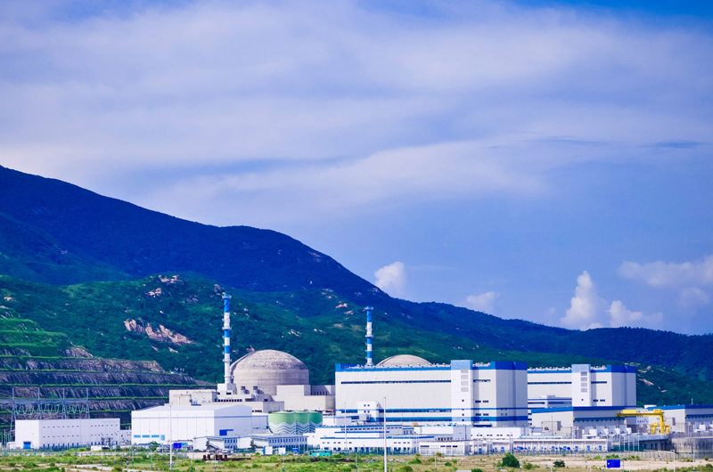

地理位置
中国广东省台山市
核电厂历史
台山核电厂是中国首座引进欧洲压水堆反应堆技术EPR的核电厂，其机组建成时间如下：
1号机组于2009年10月28日开工建设，于2018年6月29日并网成功，并在2018年12月13日正式商转。
2号机组于2010年4月15日开工建设，于2019年6月25日并网成功，并在2019年9月7日正式商转。
堆型与数量
截至2024年11月，台山核电厂共拥有2台运行中的EPR型号压水堆机组（1，2号）。
发电基本原理
压水堆（Pressurized Water Reactor）是采用高压水来冷却核燃料的一种反应堆，其工作原理为：主泵将120～160个大气压的一回路冷却水送入堆芯，把核燃料放出的热能带出堆芯，而后进入蒸汽发生器， 通过传热管把热量传给二回路水，使其沸腾并产生蒸汽，常在一回路水中加入硼酸，用以控制反应性的慢变化。之后，二回路产生的高压蒸汽会推动汽轮机发电，再经过冷凝器和预热器进入蒸汽发生器，完成二回路水循环。

图1：压水堆示意图
荣誉与贡献
台山核电厂采用了国际先进的三代核电技术—“EPR”技术，该技术在安全性的领域内是货真价实的佼佼者。台山核电厂的投产不仅提高了广东省的电力供应能力，也显著增强了中国在清洁能源方面的竞争力。 除此之外，台山核电厂的投入使用有效促进了能源结构的优化，减少了对传统化石燃料（如煤炭）的依赖，从而大幅降低了二氧化碳及其他有害气体的排放。根据相关统计，台山核电厂每年为广东省减少二氧化碳排放超过数百万吨， 同时也减少了氮氧化物和二氧化硫的排放，改善了当地的空气质量。作为一项具有战略意义的能源项目，台山核电厂不仅推动了当地经济发展，还为实现中国的碳达峰、碳中和目标提供了强有力的支持。
图2：台山核电厂全景
参考文献
1. 俞冀阳.核工程基本原理.北京：清华大学出版社，2018
2. 俞冀阳.核电厂系统与运行.北京：清华大学出版社，2016
3. 2024年中国核电行业研究报告，2024
4. 中国科学院上海应用物理研究所.浅谈沸水堆与压水堆，2011
5. AP1000反应堆压力容器的制造难点与监造应对措施
6. 国家核安全局网站